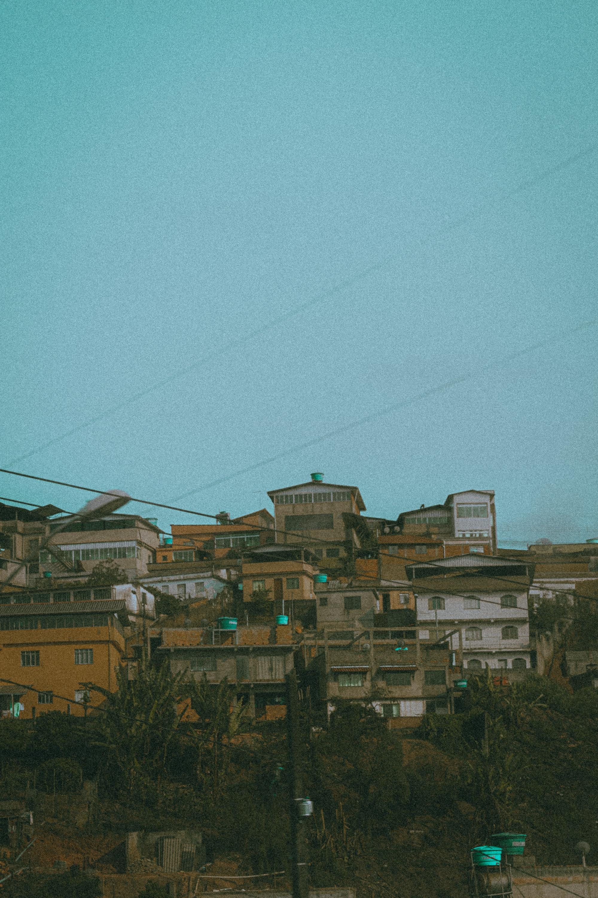

Nos conheça melhor
Nós somos estudantes do curso de tecnologia e cultura. Nossa ideia é que as pessoas de baixa renda tenham acesso à cultura e ao lazer, queremos que essas pessoas ocupem esses locais. Assim como os locais públicos, cultura, arte e o lazer deve ser para todos!
A ideia surgiu para apresentar locais que todos tenham acesso e direito à cultura e ao lazer, desde bibliotecas até trilhas. O Brasil é conhecido pela diversidade cultural, porém infelizmente muito do que é produzido por nós brasileiros é inacessível para a comunidade de baixa renda, isto é, a maioria dos locais acessíveis são pouco conhecidos ou chegam a ser quase inviáveis para a população pobre. Muita dessa carência quando o assunto é cultura vem da distância pois a maioria dos acervos culturais são encontrados nos centros, e os que não são ficam escondidos, esses locais são carentes de divulgação pública. A maior divulgação dos locais que fornecem acesso a expressões artísticas, bibliotecas, entre outros, nas comunidades vem da divulgação boca a boca e pelas redes sociais. Segundo o Artigo 215 da Constituição Brasileira: “O estado garantirá a todos o pleno exercício dos direitos culturais e acesso às fontes de cultura nacional e apoiará e incentivará a valorização e a difusão das manifestações culturais”. E pensando no motivo de nós não ocuparmos esses locais nasceu o Gira Sampa.
